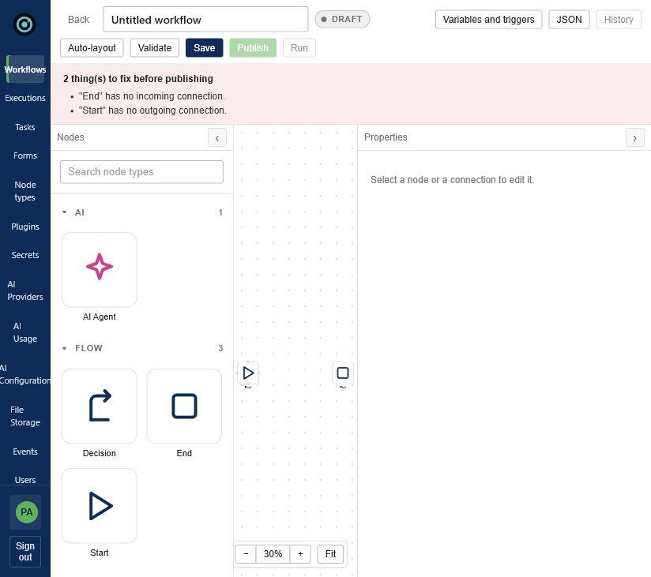
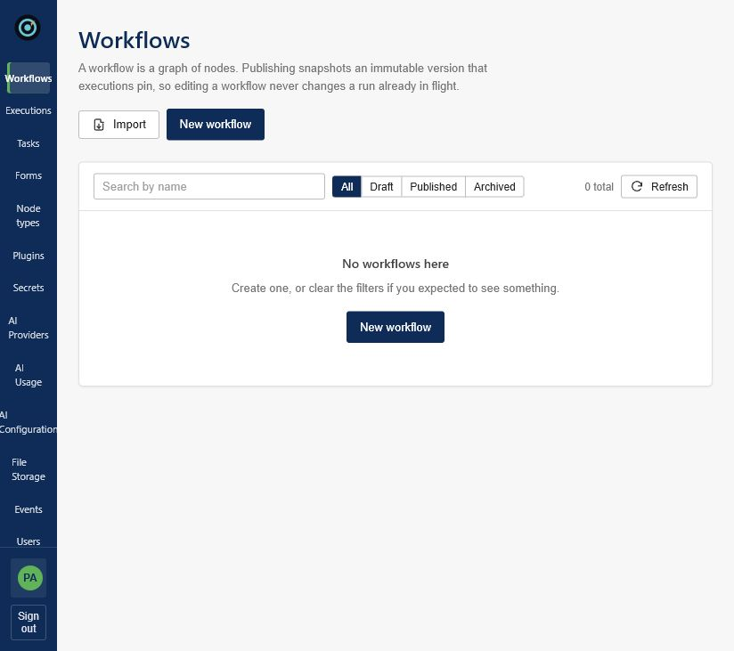
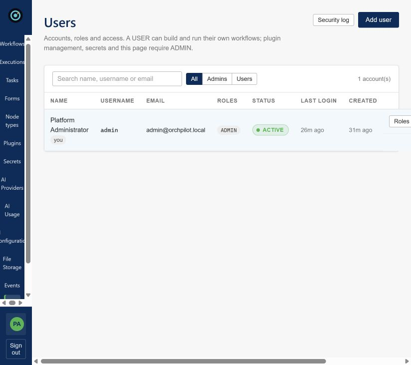
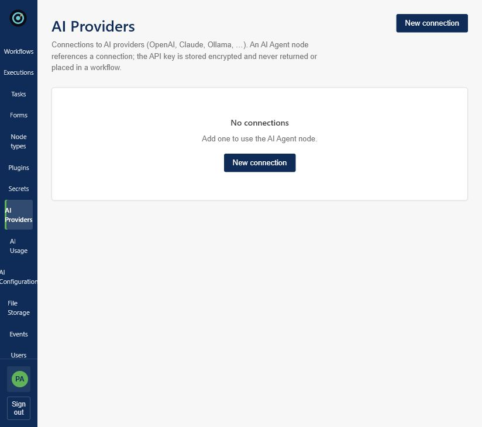

Workflows in scenario
0
Approval-heavy ops templates
OrchPilot
Durable workflows. Human accountability. Runtime-extensible integrations—built for operations that cannot fail quietly.
Investor dashboard
Illustrative operating view for diligence conversations. Metrics below are demo scenario data—not company traction.
Workflows in scenario
0
Approval-heavy ops templates
Executions (30d)
0
Illustrative volume band
Completion rate
0%
With recovery after stalls
Human tasks closed
0
Accountable approvals retained
Successful vs recovered runs · scenario
Employee access request · live path
What diligence teams look for
Product evidence
Captured from the authenticated OrchPilot console—visual design, governance, plugins, and AI configuration.




Market position
Win where approval, durability, private plugins, and auditability matter more than commodity automation.
Companies do not merely need more automation. They need automation they can trust, explain, recover, and govern.
Technical foundation
Reviewed from the local workflow-engine repository on 26 August 2026. Counts describe volume, not capacity claims.
Path to proof
Recommended commercial path: prove one expensive process, then expand the governance and plugin surface.
0–3 months
Five design partners. One approval-heavy workflow. Time-to-value instrumentation. Clear security guide.
4–9 months
SSO / SCIM, managed secrets, HA evidence, migration tooling, three paid pilots.
10–18 months
Certified plugins, stronger sandboxing, template library, second-department expansion.
OrchPilot
Visual workflows. Durable execution. Human accountability. Runtime extensibility for private systems.
Investor materials · August 2026 · Demo metrics are illustrative only